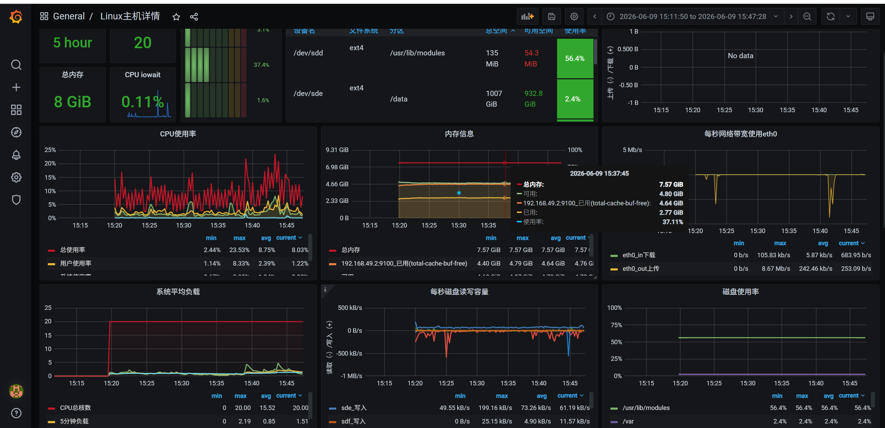
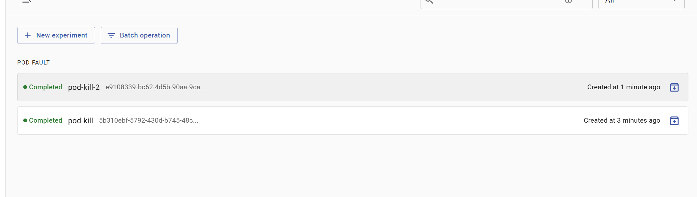
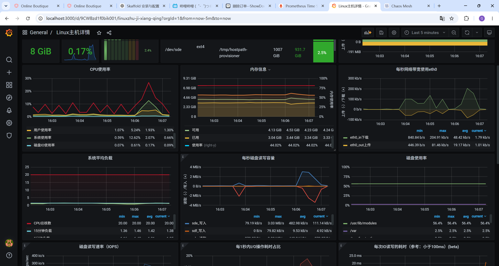

实验说明
Overview使用 ChaosMesh 进行故障注入，模拟系统中的故障情景，并结合 Prometheus 和 Grafana 进行实时监控与可视化展示，监控系统在故障发生时的表现。
系统正常使用状态
Baseline如下图所示，此时系统处于正常使用状态，各服务 Pod 正常运行，监控面板显示基础资源消耗和运行状态。

执行两次 PodKill 后
Fault Injection通过 Chaos Mesh 执行两次 PodKill 后，系统部分服务被强制终止，随后由 Kubernetes 控制器进行重建。监控面板中可以观察到资源、状态和性能指标出现明显波动。


观察结论
Conclusion可以发现，PodKill 后系统状态和性能指标出现明显变化。被 Kill 的 Pod 不同时，对于系统的影响程度也存在较大差异，说明不同微服务在业务链路中的关键程度并不相同。